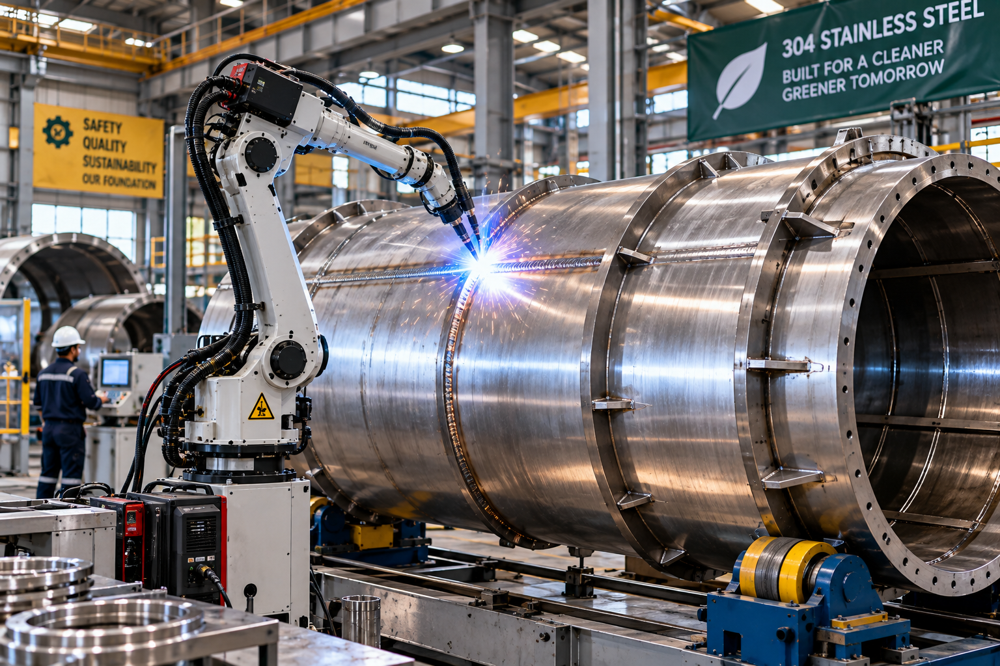
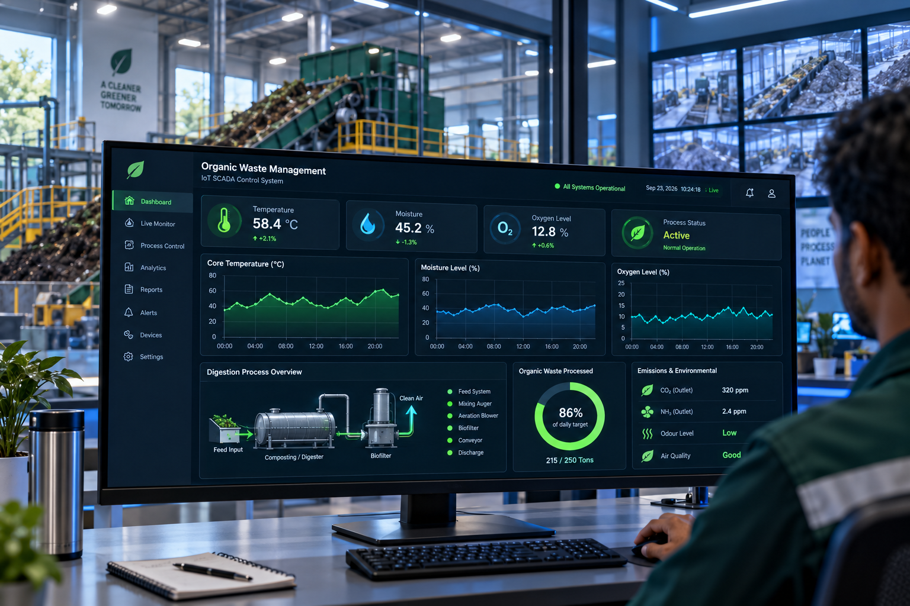

We assist municipal planning departments with full environmental compliance docs, EPA standards, and landfill tipping cost reduction projections.
Closed-loop negative pressure systems with scrubbers and bio-filters ensure absolute zero odor near residential municipal zones.
Continuous temperature, oxygen, and moisture monitoring accessible via cloud dashboard for municipal facility operators.

Our continuous rotary bio-drums maintain optimal aerobic microbial decomposition temperatures naturally, digesting organic solids into certified bio-fertilizer within 24 hours.
Rapid thermophilic microbial breakdown reduces organic mass by 85%+.
Closed-loop negative air pressure passes exhaust through bio-filter beds.
Industrial grade corrosion-resistant stainless drum built for 25+ year lifespan.
Automated rotation speed, moisture injection, and aeration feedback loops.
Engineered to handle high-moisture commercial, municipal, and agricultural organic waste streams effortlessly.
Kitchen scraps, dining waste, cooked fats, and bakery byproducts from commercial canteens and hotels.
24h DigestionDewatered municipal sludge cake, wastewater solids, and bio-solids converted into pathogen-free fertilizer.
Pathogen FreeCrop stalks, sugarcane bagasse, poultry manure, and green garden trimmings transformed into humus.
Soil RegenerativeExpired supermarket produce, packaged bakery returns, and fruit processing pulp with automated depackaging lines.
Depackaging LineEvery EcoCycle municipal plant connects directly to our IoT cloud dashboard, giving plant operators and city engineers real-time visibility over digestion performance.

Built to comply with strict international environmental protection regulations and heavy machinery safety standards.
Certified Exceptional Quality Soil output free from salmonella, enteric viruses, and heavy metal contaminants.
Verified Environmental Management System standard with audited carbon footprint reduction protocols.
Complies with European Union heavy industrial machinery safety directives and emergency stop circuitries.
Multi-stage biological scrubber beds guarantee non-detectable ammonia and volatile organic compound emissions.
See how city councils and regional waste authorities eliminate tipping fees with EcoCycle equipment.
"Reduced our municipal landfill tipping expenses by $1.8M annually while producing 3,000+ tons of certified organic compost for city parks."
"The zero-odor biofilter guarantee was critical for our facility located 300 meters from residential suburbs. Not a single odor complaint in 3 years."
"Processed 40 tons of daily food processing reject waste with automated PLC telemetry. The ROI surpassed our initial projections by 25%."
Send a sample of your municipal organic waste to our R&D laboratory or schedule an onsite bio-drum pilot plant trial.